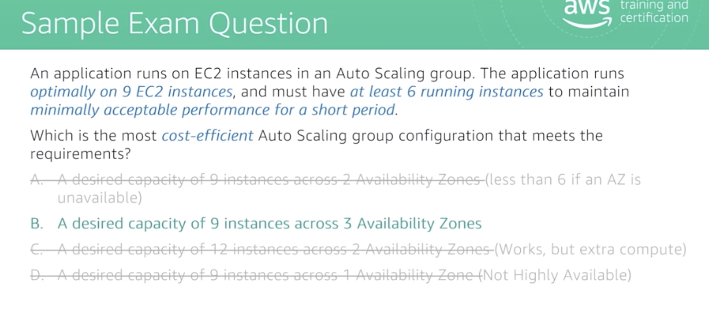
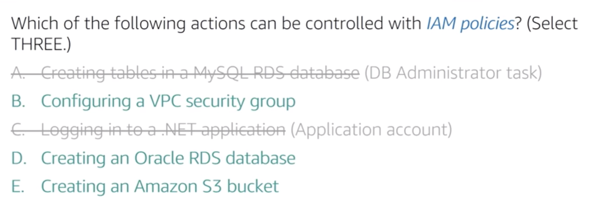

The new version of SAA test is based around the well-architectured framework.
Validate the person’s ability to:
- Define a solution using architectual design principles, based on customer requirements
- Provide implementation guidance based on best practices to the organisation throughout the lifecycle of the project.
Question Breakdown
- Resilient: 34%
- Performant: 24%
- Secure: 26%
- Cost-optimised: 10%
- Operationally Excellent: 6%
Design Resilient Architectures
Choose reliable/resilient storage.
Ephemeral volumes
instance storage is ephemeral
- only certain EC2 types
- fixed capacity
- disk type and capacity depends on EC2 instance
- application-level durability
- good for caching/temporary storage.
EBS
attachable storage
connects to one EC2 instance at a time - different types
- encryption
- snapshots
- provisioned capacity
- independent lifecycle than EC2 instance
- multiple volumes striped to create larger volumes
Think as EBS volume as durable, attachable storage for EC2 instance.
Four types of EBS:
SDD is good for random access and HDD is good for sequential access. - gp2
- io1
- st1: throughput optimised HDD
- sc1: Cold HDD
SDD is more expensive than HDD.
Further reading: White Paper: AWS Storage Overview
EFS
- Also mounted as a disk into EC2 instance like EBS, but could be shared among instances.
- PB scale.
Elastic capacity.
Supports NFS v4.0, v4.1 protocol.
Compatible with Linux-based AMIs for Amazon EC2. Not currently supported for windows.
EFS process:
You create an Amazon EFS volume and then create a mount point for it in a particular VPC. The EFS volume can only attach to a single VPC at a time.
Within the VPC, you get mount target that your EC2 instance can connect to.
S3
Consistency model
You always want to ask the consistency for a distributed model.
- Strong consistency for new objects
- Eventual consistency for updates: because it is a scalable, distributed system.
Storage classes
S3 Standard
S3 Standard-IAEncryption at rest
SSE-S3: S3 manages keys
SSE-KMS: KMS managed enveloped keys
SSE-C: customer manage keys to encrypt on the server sideEncryption at transit
HTTPSVersioning
Great way to protect from accidental delete and overwrite.Access Control
Control S3 access through: - IAM user policies
- bucket policies
- Amazon S3 access control lists (ACLs) enable you to manage access to buckets and objects.
Multi-part upload
Internet-API accessible
Regional Availability
Regional scoped.Amazon Glacier
- Encrypt data by default
- Regional
- Retrieval types: expedited( 1–5 minutes), standard(3-5 hours), bulk(5-12 hours)
- 11 9’s durability
Decouple
Ensures if one component fails, the others stay functional.
SQS queue
- asynchronous interaction
- data persistence when service fails
- allow for scalability in individual component
Decouple from Identity (e.g. IP) of Components
- Elastic IP address: EIP could be moved to the new server.
- Elastic Load Balancing
mult-tier architectures
mult-tier architecture is naturally decoupled
high availability and fault tolerance
“Everything fails, all the time”
Service failure should be treated as operational events. You want to design you system to be resilient to instance/code failures.
Fault tolerance
The more loosely your system is coupled, the more easily it scales and the more fault-tolerant it can be.
Fault tolerance means the user doe
s not experience any impact from a fault and the SLA is met. It is a higher requirement than high availability - HA means the service is up and available, but could be running in a degraded status.
CloudFormation
Enhances resilience: you can re-launch your system whenever you want.
- Template (Declarative definition of resources to create) -> Stack (Collection of AWS resources)
- Templates do not need to be region-specific.
- You can use mappings to specify the base AMI since AMI IDs are different in each region.
Lambda
Provide stateless code for AWS to deploy and manage - not vulnerable to instance failure.
You pay for invocation.
- You can access Lambda print statement outputs through CloudWatch Logs.
RTO and RPO
- RTO: recovery time objective, time taken for system to recover back to service.
- RPO: recovery point objective, how much data is lost if the system fails (can be measured either in MB/GB or time units).
Test Axioms
- Expect “Single AZ” will never be a right answer.
- Using AWS managed services should always be preferred.
- Fault tolerance and high availability are not the same thing: fault tolerant is a higher requirement, conceals the service from the user with no loss
- Expect that everything will fail at some point and design accordingly.
Design Performant Architectures
Storage and databases
EBS
- EBS trade-offs between SSD (General purpose/ provisioned IOPS) and HDD (throughput-optimised/cold HDD)
- EBS volumes are automatically replicated within an Availability Zone.
S3
- You should offload static storage from your server instance to S3: This dramatically improves web server performance by freeing up the server to use all of the CPU/memory for serving dynamic content.
- Buckets are always tied to a region, although you do not need to specify the region in the URL (names are globally unique).
Amazon S3 Payment Model
Pay for what you use, three components:
- GBs per month
- Transfer out of region
- PUT, COPY, POST, LIST, GET requests
Free for: - Transfer into S3
- Transfer out from Amazon S3 to Amazon CloudFront
- Transfer out from S3 to the same region
If you have higher availability requirement, use cross-region replication.
Objects are immutable - the only way to change a single byte is to replace the object.
RDS or NoSQL?
Use Amazon RDS when:
- Complex transactions or complex queries
- A medium-to-high query/write rate
- No more than a single worker node/shard
- High durability: won’t be lost from machine fails (Also with DynamoDB)
Do not use Amazon RDS when:
- Massive read/write rates (eg. 150K write/second)
- Sharding: DynamoDB automatically shards your data into multiple servers. This is why is scales so well.
- Simple GET/PUT requests and queries -> DynamoDB
- RDBMS customisation
RDS Read Replicas
Improve read performance, take workload off master instance.
Which RDS engines support Read Replica?
Read Replica is supported for all of the engines, except Microsoft SQL Server and Oracle. So these are:
- MySQL
- PostgreSQL
- Aurora
- MariaDB
DynamoDB: Provisioned throughput
DynamoDB grows in size as your data footprint changes.
You do specify your throughput
The units to define DynamoDB capacity are RCU and WCU.
- Read capacity unit (for item up to 4KB in size).
- One strongly consistent read per second.
- Two eventually consistent reads per second. (If you don’t care about strong consistency, each RCU gives you two reads)
- Write capacity unit (for an item up to 1KB in size)
- One write per second.
Caching
You can cache data of your application at different levels.
CloudFront
When requested, the request gets directed to the optimal edge location. If the edge location does not have the content, the request goes to the origin, and the origin content is transferred to CloudFront edge location for caching.
Protected with WAF and AWS Shield.
ElastiCache
Use ElastiCache to cache what would have been repeatedly fetched from the database(DynamoDB/RDS/MongoDB)
Memcached and Redis
- Memcached: simpler, easier to set up, multi-thread, low maintenance, easy horizontal scalability with Auto Discovery.
- Redis: more sophisticated data structure support, atomic operations, pub/sub messaging, read replicas/failover, cluster mode/sharded clusters, persistence
Design decision
Good candidates to store in a cache: - Session state
- shopping cart
- product catalog
Do not cache data that needs to be as fresh as possible.
Elasticity and Scalability
Horizontal Scaling vs Vertical Scaling
might be tested on whether you want to scale up/down or scale out/in.
Auto Scaling
Auto Scaling, Elastic Load Balancer and CloudWatch work together to enable auto scaling of EC2 instances.
Auto Scaling uses a Launch Configuration to launch a fully configured instance automatically. Contains:
- AMI ID,
- instance type,
- storage configuration,
- key pair,
- user data,
- security group
Auto Scaling Group
- Points to the launch configuration
- Specifies min, max, desired size of Auto Scaling group
- May reference an ELB
- Health Check Type
Auto Scaling policy
- Specifies how much to scale in/out
- One or more policies could be attached to one group.
CloudWatch Metrics
Can monitor:
- CPU
- Network
- Queue Size
Default EC2 metrics: CPU, network, disk
Memory is not a native CloudWatch event: CloudWatch does not have access to this level.
Remember: auto scaling takes time. If you know that a spike will happen at a known time, a scheduled auto scaling is better than scaling upon a CPU utilisation alarm. Here we assume that the new instances come up into full capacity in 20 minutes.
“Must have at least 6 running instances to maintain minimally acceptable performance for a short period of time”:
It does not mean you want to scale down - 6 is the minimally acceptable number. It means you want your system to stay at least 6 when things fail!
The health status of an Auto Scaling instance is either healthy or unhealthy. All instances in your Auto Scaling group start in the healthy state. Instances are assumed to be healthy unless Amazon EC2 Auto Scaling receives notification that they are unhealthy. This notification can come from one or more of the following sources: Amazon EC2, Elastic Load Balancing (ELB), or a custom health check.
EBS is responsible for sending traffic to healthy instances.
Increasing instance size will not increase availability.
Test Axioms
- If data is unstructured, Amazon S3 is generally the storage solution.
- Use caching strategically to improve performance
- Know when and why to use Auto Scaling
- Choose the instance and database type that makes the most sense for your workload and performance need.
Security
- White paper: AWS Security Best Practices
- White paper: overview of security processes
- IAM best practices
Shared Responsibility Model
Managed services move the line higher.
Both client-side and server-side data encryption configurations are responsibilities of customers.
Identities
IAM integrates with Microsoft Active Directory and AWS Directory Service using SAML identity federation.
Identities in AWS have the following forms:
- IAM users: Users created within an account
- Roles: Temporary identities used by EC2 instances, Lambdas, and external users.
- Federation: Users with Active Directory identities or other corporate credentials have role assigned in IAM
- Web Identity Federation: Users with web identities from Amazon.com or other Open ID provider have role assigned using Security Token Service (STS).
It is impossible to put an IP restriction on root user logins.
Policies control actions on AWS resources.
Secure Data
Data in transit
Data transferring in and out of AWS infrastructure
- SSL over web
- IPsec for VPN
- IPsec over AWS Direct Connect
- Import/Export/Snowball
These are tampering-resistant and encrypted.Data sent to the AWS API
AWS API calls use HTTPS/SSL by defaultData at rest
Access Control
Data stored in Amazon S3 is private by default - requires AWS credentials for access. - Access over HTTP or HTTPS
- Audit of access to all objects
- Supports ACL on:
- Buckets
- Prefixes
- Objects
Encryption
- Server side: SSE-S3, SSE-KMS, SSE-C
- Client side: encrypt the data before sending in to S3: CSE-KMS, CSE-C(customer managed master encryption keys)
In some cases, client-side encryption is required for compliance and regulations.
In general, server-side encryption has better performance and is easier.
Where to store keys
- Key Management Service
- Customer software-based key management
- Integrated with many AWS services: EBS, S3, RDS, Redshift, Elastic Transcoder, WorkMail, EMR
- Use directly from application
- AWS CloudHSM
- Hardware-based key management
- Use directly from application
- FIPS 140-2 compliance
- Dedicated applicance for key management
Define the network infrastructure for a single VPC application
- Use subnets to define Internet accessibility.
- Security Groups: Use security groups to control traffic in, out of and between resources.
Security groups are stateful. Therefore, to allow users to access your web server, you do not have to allow outbound access on port 80 for the security group. You do need to allow outbound traffic for the NACL.
Services to get traffic in or out of your VPC
- Internet Gateway: Connect the Internet
- Virtual private gateway: VPN
- AWS Direct Connect: Dedicated pipe
- VPC peering: Connect to other VPCs
- NAT Gateway: allow internet traffic from private subnets
Test Axioms
- Lock down the root user
- Security groups only allow. Network ACLs also deny.
- Prefer IAM Roles to access keys.
Cost Optimisation
AWS Pricing
- Pay as you go
- Pay less per unit by using more
- Pay less when you reserve
You pay for: - Compute
- Storage
- Data Transfer
EC2 pricing
- Clock hours of server time
- Machine configuration
- Machine purchase type
- Number of instances
- Elastic Load balancing: charged by time
- Detailed monitoring
- Auto Scaling: AWS Auto Scaling is free to use, and allows you to optimize the costs of your AWS environment.
- Elastic IP addresses
- Operation systems and software package (marketplace)
- instance storage is free but ephemeral.
- EC2 instance pricing factors:
- EC2 instance family
- Tenancy (default/dedicated)
- Pricing model (reserved/spot/on demand)
Using spot instances
- Use hibernate to pause your instance (saves the in-memory data) and resume later.
- Spot blocks allow you to request Amazon EC2 Spot instances for 1 to 6 hours at a time to avoid being interrupted while your job completes.
S3 Pricing
- Storage class
- Storage
- Requests
- Data transfer
EFS does not support public files
EBS
- Volumes: Solid State Drives(SDD, more expensive, good for random access) and Hard Disk Drives(HDD, good for continuous access)
- Input/output operations per seconds
- Snapshots taken and restored
- Data transfer
User serverless architecture to save cost
Better utilisation of resources by paying only when you use:
- Lambda
- DynamoDB
- Amazon S3
- API Gateway: attache your REST endpoints to Lambda, so that you can invoke the Lambda from the browser or from any HTTP client.
CloudFront
Benefit on both cost and performance!
Use cases
- Content: static OR dynamic
- Origins: Amazon S3, EC2, Elastic Load Balancing, HTTP servers
Reduce data transfer cost with CloudFront - There is no data transfer charge between S3 and CloudFront.
- You can also use CloudFront to offload the work for EC2 instances.
CloudFront Pricing
- Traffic distribution
- Requests
- Data transfer out
Test Axioms
- If you know it will be on, reserve
- Any unused CPU is a waste of money
- Use the most cost-effective data storage service and class
- Determine the most cost-effective EC2 pricing model and instance type for each workload.
Operational Excellence
Main idea: make the system automated and adapting to circumstance changes.
Operational Excellence: The ability to run and monitor systems to deliver business value and continually improve supporting processes and procedures.
Key practices:
- Prepare
- Operate
- Evolve
Operational Excellence Design Principles
- Perform operations with code
- Annotate documentation
- Make frequent, small, reversible changes
- Refine operations procedure frequently
- Anticipate failure
- Learn from all operational failures
AWS Services for Operational Excellence
- AWS Config: track resources such as EBS volumes and EC2 instances. verifies that resources comply to configuration rules.
- AWS Cloud Trail: logs API calls
- AWS CloudFormation: code -> stack
- AWS Inspector: check EC2 instances for security vulnerabilities
- AWS Trusted Advisor: check account for best practices on security, reliability, cost, performance and service limits
- VPC Flow Logs: logs network traffic. capture layer 3 and layer 4 IP-level logs. could not do things about layer 7 errors like 404 errors.
- AWS CloudWatch: can help extract patterns by converting log lines into metrics.
Test Axioms
- IAM roles and safer than keys and passwords.
- Monitor metrics across the system.
- Automate responses to metrics where appropriate.
- Provide alerts for anomalous conditions.